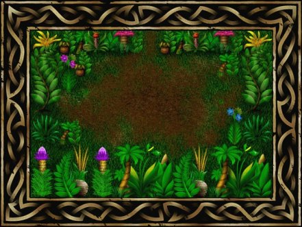

Ah, Ultimate. The stuff of legends. Responsible for some stupidly
playable and unfeasibly advanced games, Ultimate also introduced one of
the Spectrum's biggest heroes - Sabreman. And now Jeff Braine is about
to resurrect him with a new remake.
Currently in the alpha phase (whatever that means), Sabre Wulf PC
appears to be progressing nicely. The biggest thing about the original
Sabre Wulf was the graphics. Clear, brightly-coloured, the sprites also
hammered about the screen like greased ferrets, and that's exactly what
they do in the remake too. Although the sprites are currently grabbed
straight from the original, Pierre Jovanovic's background graphics
look absolutely lovely. Because Jeff loves us, he's also bunged us some
additional eye-candy for you to gawp at. We'll be keeping an eye on this
one; hopefully it'll be a little bit easier than the original, which is
still guaranteed to get me swearing at the old Speccy...
|


|